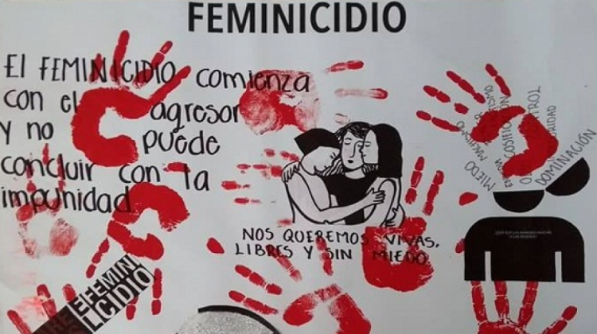

FEMINICIDIO
feminicidio es la manifestación más extrema del abuso y la violencia de hombres hacia mujeres. Se produce
como consecuencia de cualquier tipo de violencia de género, como pueden ser las agresiones físicas, la
violación, la maternidad forzada o la mutilación genital.

NEOLOGISMO
El feminicidio es un neologismo que proviene del vocablo inglés femicide, que se refiere al asesinato de mujeres
por razones de género, fue Diana Russell quien utilizó el término femicide por primera vez en 1976 ante el
Tribunal Internacional sobre Crímenes contra la Mujer en Bruselas, definiendo así las formas de ...
El primer caso de feminicidio
Entre los casi 700 mil expedientes histiricos resguarda el poder judicial del estado de mexico figura el
asesinato de LUISA MARIA a manos de su esposo uxoricidio, antecedente de feminiCIDIO en mexico.
LAS HERMANAS MIRABAL
“Las hermanas Mirabal fueron brutalmente asesinadas por ser mujeres y activistas. Su único crimen fue
haber luchado o por sus derechos contra el dictador dominicano Rafael Leónidas Trujillo”, dice la Unesco.
Su homicidio, lejos de acallar las voces disidentes, aumentó la presión contra el régimen de
Trujillo.

YA BASTA DE ASESINATOS LAS MUJERES DEBEN DE SER LIBRES Y NO DEPENDER DE UN HOMBRE ABUSIVO ,CADA DIA MAS SOMOS MENOS MUJERES EN EL MUNDO.
Angelis Gomez